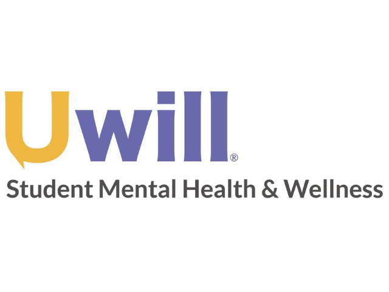

Counseling and Psychological Services (CAPS)
University Health & Counseling (UHC) supports the health and well-being of the campus community. We are inspired to help students realize their potential, cope with the stresses of life, work productively, and connect meaningfully with others.
Learn More

Hours
Monday - Friday: 8:00am - 5:00pm
Saturday & Sunday: Closed